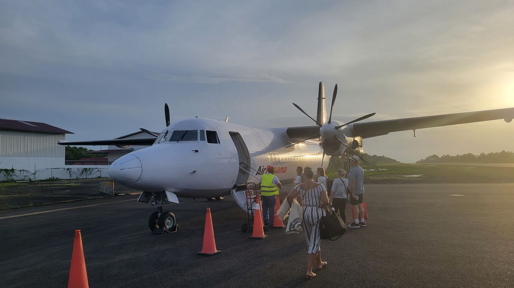
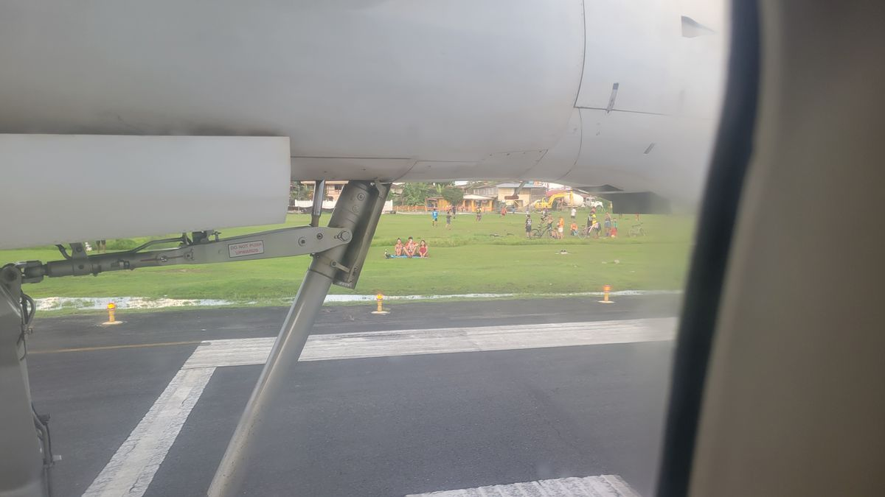
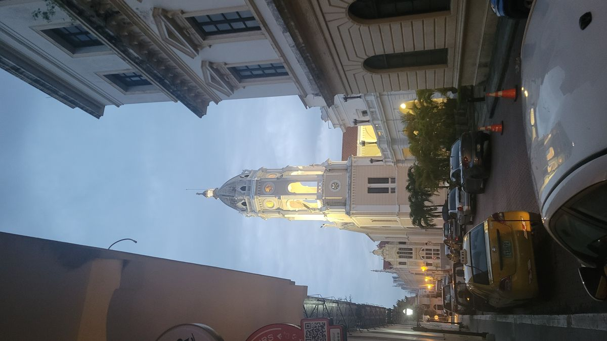
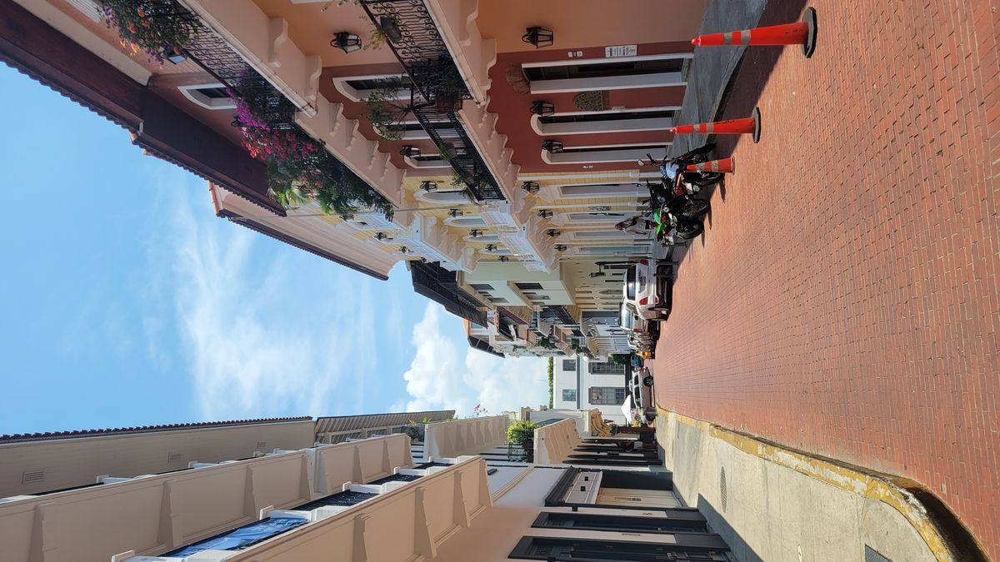
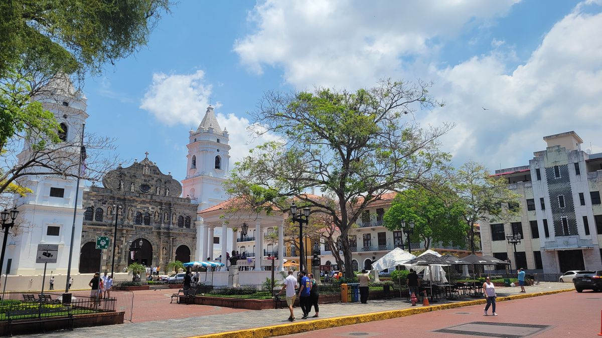

Casco Viejo, Panama
You know those days when you think about what’s on your agenda and you just get that feeling that you “literally just can’t even” and you will do almost anything to find and excuse to not do it. Yeah, that happened to me in Bocas when I was trying to purchase my bus ticket out of there. A boat ride, 2 bus transfers and 12 hours (advertised at 12 hours, I’ve learned that in reality it would probably be in the 15-18ish range) is what was going to get me to Panama City. And while this trip is supposed to be an adventure, I was all adventured out when it came to that kind of stuff. Well for today at least.
There is an airport on Bocas that has multiple flights a day to Panama City, but since I’m not planning more than a few days ahead, the cheap tickets are long gone. When I had checked earlier in the week the cheapest seat was over $200 USD and since that’s a few days of traveling budget, I thought I was going to have to slum it on the bus.
While the existential dread flowed through my body while thinking about another Central American bus ride, I went to the website for Air Panama, the regional airlines that services Bocas, and figured I would stare at the multi hundred-dollar price tag as a reminder that I do indeed have to take the bus. That was until I put in the date for the flight and lo and behold there were now 2 tickets available in the basic economy range. $69USD one way. I didn’t even hesitate and purchased the seat as quickly as I could enter my information. The bus would have been $30. Factor in the time savings, comfort and being able to fly in a Fokker 50, a type I have never flown and due to the small amount produced and their age, probably will never get the opportunity to fly on again(I’m an airplane nerd also, so these things do matter).
The day of departure came and my afternoon flight to Panama City’s Albrook airport (formerly Albrook Air Force Station in the US Canal Zone). The flight was uneventful and went without a hitch, and before you know it, I touched down in the much more modern Panama City. A $5 Uber ride got me to an AirBNB in the beautiful Casco Viejo district of Panama City.


You’ve seen I’ve been to quite a few Spanish Colonial cites in Central America on this trip. I was more than surprised to see just how unique this one was compared to the others. The city was beautifully restored, and hosted many upscale restaurants, bars and clothing stores that made you want to buy a Panama hat, linen clothes and type out a novel on a mechanical type writer while drinking an Old Fashioned like Jack Kerouc or Ernest Hemmingway probably once did on their travels here. It’s the only place you can see a Spanish Colonial Church sitting on the same square as a American Style Art Deco building, built at the height of the Canal Zone in the 1930’s. Now a days The Republic of Panama houses their Ministry of Foreign affairs there. A fitting place to showcase the history of modern Panama to visiting dignitaries.



More adventure are planned for here and well cover those in another article, but for a few days were just going to rest and soak up the ambiance of beautiful Casco Viejo, Panama